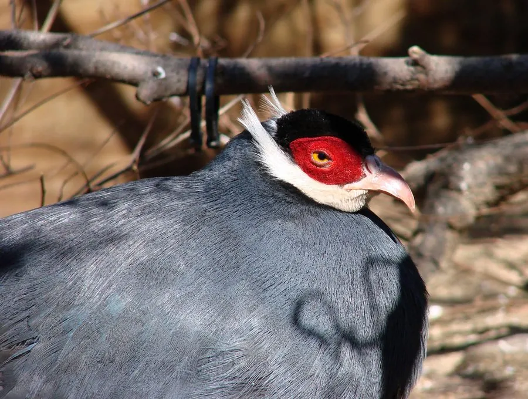

鸟类 · 动物界
蓝马鸡 Crossoptilon auritum

通体蓝灰色的马鸡，脸部裸皮鲜红，白色耳羽簇向后突出，尾羽长而蓬松。为中国特有雉类，栖息于西北高山针叶林。
- 分类
- 门脊索动物门纲鸟纲目鸡形目科雉科属马鸡属
- 栖息环境
- 海拔 2100–4000 米的高山针叶林、针阔混交林、林缘灌丛与高山草甸。
- 地理分布
- 中国特有，分布于青海东部、甘肃南部、宁夏、四川北部与陕西南部。
- 保护级别
- IUCN 红色名录列为无危（LC）；中国国家二级保护野生动物，列入 CITES 附录一。
物种志
蓝马鸡体长约七十五至一百厘米，体重一千五百至二千五百克。通体蓝灰色，羽毛具细密的金属光泽，头顶与颈侧颜色较深，尾羽长而松散，中央尾羽可达体长的一半。脸部裸皮鲜红，耳羽簇白色，向后延伸成短角状。虹膜橙黄，嘴淡角黄色，脚红色。雌雄羽色相似，雄鸟体型较大，跗跖具距。
它栖息于海拔二千一百至四千米的高山针叶林、针阔混交林与林缘灌丛，常成十至三十只的群体在林下觅食，食物包括植物嫩叶、根茎、种子、浆果与昆虫。繁殖期在灌丛或倒木旁地面营巢，每窝产卵六至十枚，由雌鸟孵化。蓝马鸡是中国特有鸟类，分布于青海东部、甘肃南部、宁夏贺兰山、四川北部与陕西南部。它适应性较强，在保护区内的种群相对稳定，被列为国家二级保护动物。
形态与习性
- 体长75–100 厘米（含长尾）
- 体重1500–2500 克
- 食性植物嫩叶、根茎、种子、浆果与昆虫
- 繁殖地面营巢，每窝 6–10 枚
- 分布中国西北山地，中国特有
- 保护级别国家二级；IUCN 无危
趣味知识
- 蓝灰色羽毛在阳光下泛出金属光泽。
- 白色耳羽簇像一对短角向后翘起。
- 为中国特有鸟种，贺兰山种群尤为著名。